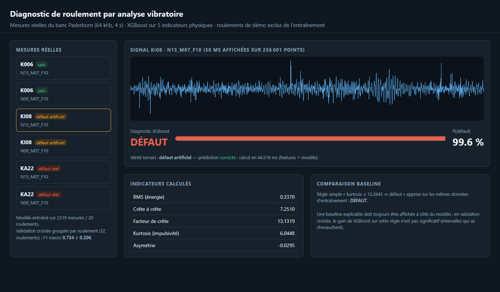
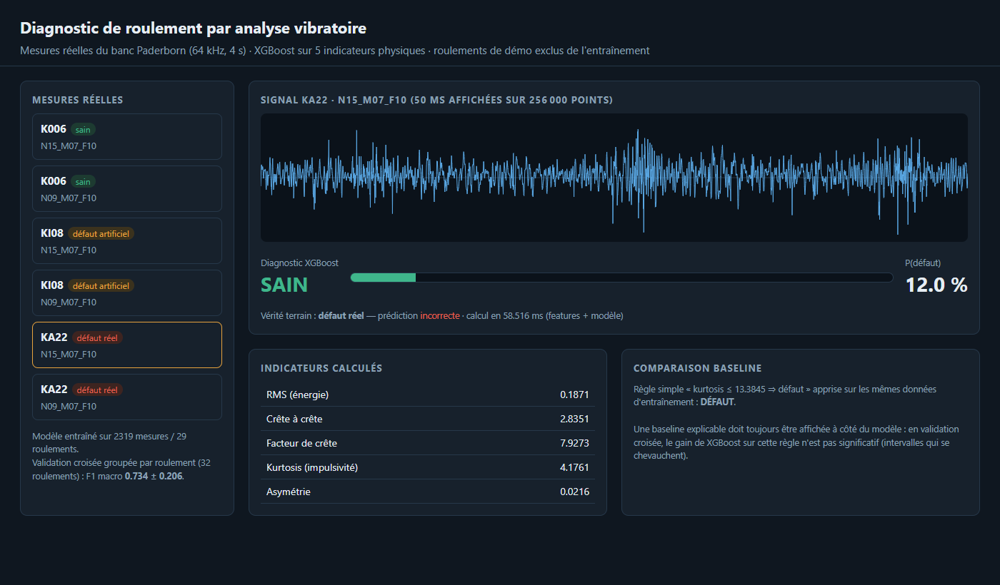
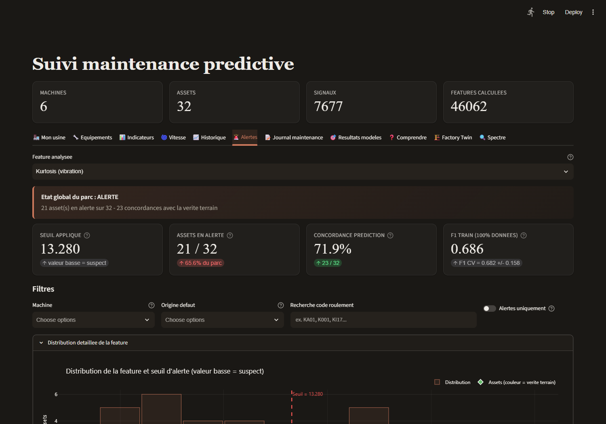
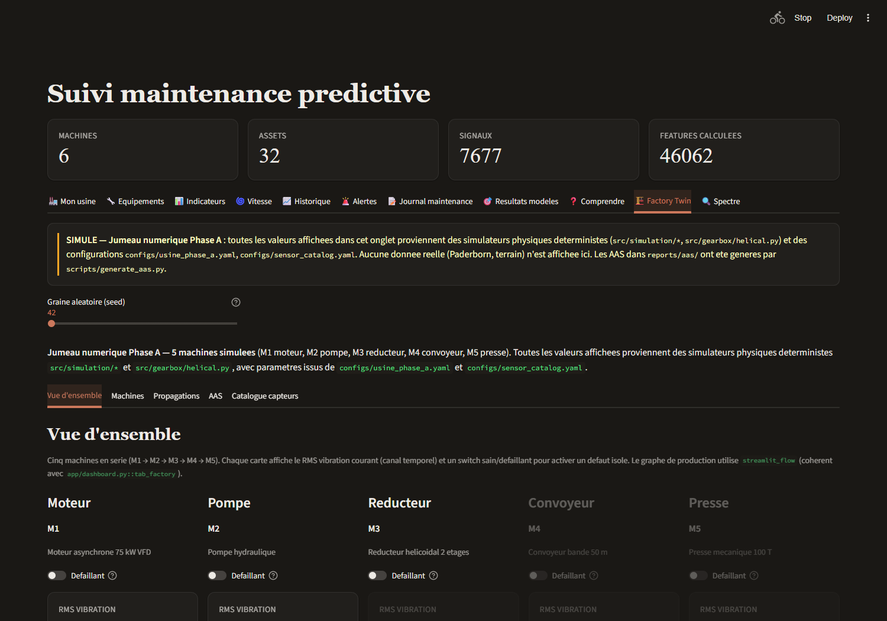
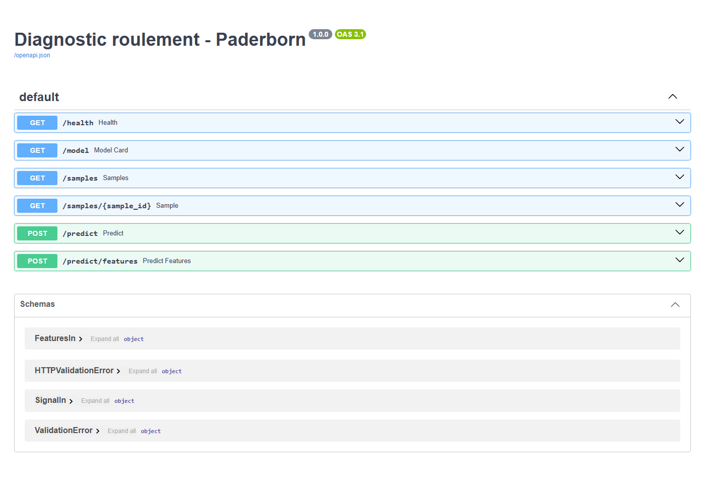
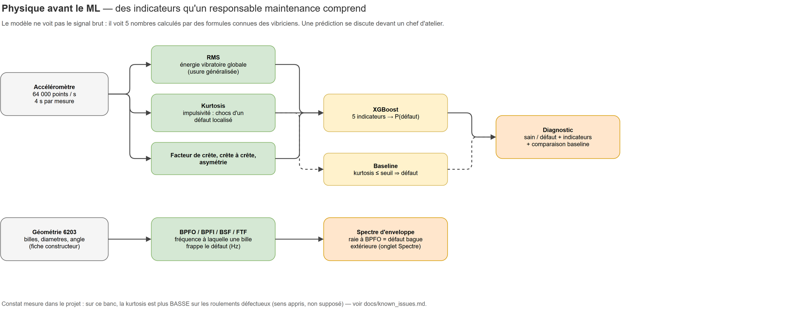
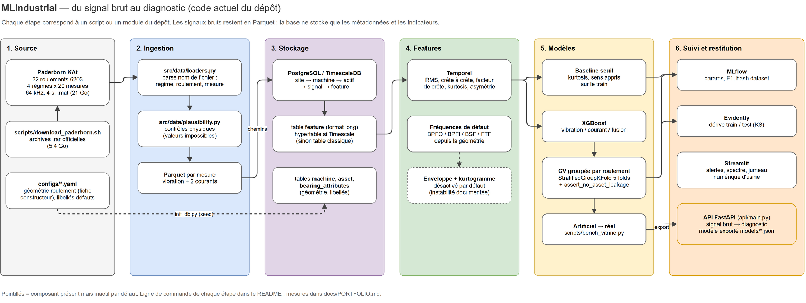
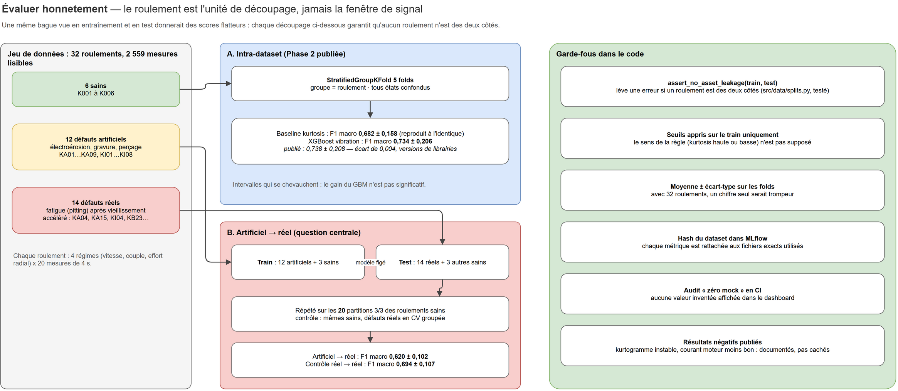
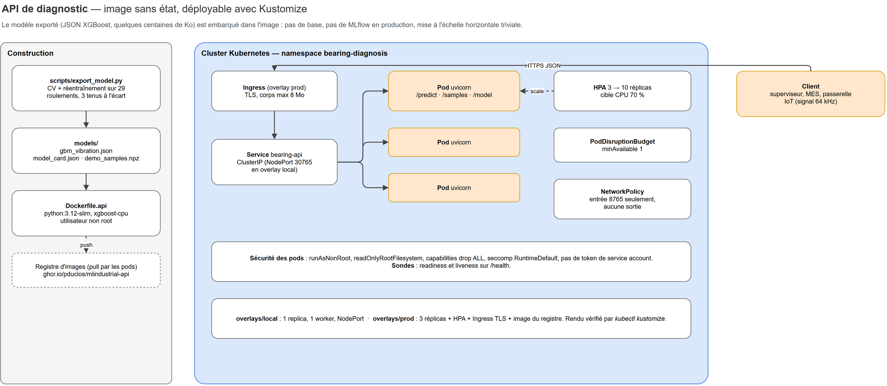

Le projet en vidéo
Vidéo générée par scripts/promo_video.py à partir des captures réelles de cette page ; narration par synthèse vocale.
Un score brillant au labo ne dit rien de l'atelier
La plupart des démonstrations de maintenance prédictive testent un modèle sur les roulements qu'il a déjà vus, avec des défauts fabriqués à la main. Les scores sont flatteurs ; en production, ils s'effondrent.
Pour un responsable maintenance
- Un roulement qui casse arrête une ligne : l'enjeu est d'anticiper, pas d'afficher un score.
- Le diagnostic s'appuie sur des grandeurs connues des vibriciens (énergie, chocs), donc discutable devant un chef d'atelier.
- Le projet compare aussi le courant moteur, déjà mesuré par chaque variateur, à un accéléromètre à installer : peut-on éviter d'instrumenter ?
Pour un lecteur technique
- Découpage par roulement, jamais par fenêtre de signal : aucune fuite entre entraînement et test.
- Baseline à seuil obligatoire avant tout modèle plus complexe.
- Moyenne ± écart-type sur 5 folds : avec 32 roulements, un chiffre seul serait trompeur.
- Résultats négatifs publiés tels quels.
Trois roulements que le modèle n'a jamais vus
L'API (api/main.py) embarque 6 mesures réelles de 3 roulements tenus à l'écart de l'entraînement : un sain, un défaut artificiel, un défaut réel. Résultat, sans retouche :
| Mesure | Vérité | XGBoost | P(défaut) | Baseline kurtosis |
|---|---|---|---|---|
| K006 · N15_M07_F10 | sain | sain | 0,9 % | sain |
| K006 · N09_M07_F10 | sain | sain | 0,8 % | sain |
| KI08 · N15_M07_F10 | défaut artificiel | défaut | 99,6 % | défaut |
| KI08 · N09_M07_F10 | défaut artificiel | défaut | 97,8 % | sain |
| KA22 · N15_M07_F10 | défaut réel | sain | 12,0 % | défaut |
| KA22 · N09_M07_F10 | défaut réel | sain | 2,3 % | sain |
Le défaut réel KA22 (fatigue de la bague extérieure) est manqué par XGBoost sur les deux régimes, alors que la règle simple sur la kurtosis le détecte une fois sur deux. C'est l'écart labo / terrain que mesure la section Évaluation — montré ici plutôt que caché par un choix d'exemples favorable.





/predict (signal brut), /predict/features, /samples, /model.Le trajet d'une mesure, en six étapes
- Acquisition. Un accéléromètre enregistre 64 000 points par seconde pendant 4 s ; deux courants moteur sont enregistrés en parallèle.
- Contrôles. Le nom de fichier donne le régime (vitesse, couple, effort radial) et le roulement ; des contrôles physiques rejettent les valeurs impossibles. Sur 2 560 fichiers, 1 est illisible et écarté avec un message explicite.
- Indicateurs. RMS (énergie), crête à crête, facteur de crête, kurtosis (impulsivité), asymétrie — cinq formules de vibricien, pas une boîte noire.
- Fréquences de défaut. BPFO, BPFI, BSF, FTF sont calculées depuis la géométrie du roulement 6203 (fiche constructeur) pour l'analyse d'enveloppe — désactivée par défaut, car la sélection de bande s'est révélée instable (documenté).
- Décision. Une règle à seuil sur la kurtosis sert de référence ; XGBoost combine les cinq indicateurs.
- Restitution. MLflow trace chaque run avec le hash du jeu de données ; Streamlit et l'API exposent le diagnostic avec ses indicateurs.

Les chiffres annoncés, reproduits sur cette machine
Jeu complet téléchargé depuis la source officielle (université de Paderborn, 32 archives, 21 Go extraits), pipeline relancé de bout en bout. Validation croisée StratifiedGroupKFold, 5 folds, groupe = roulement.
| Approche | Publié (README) | Mesuré ici | Verdict |
|---|---|---|---|
| Baseline seuil kurtosis | 0,682 ± 0,158 | 0,682 ± 0,158 | identique |
| Baseline facteur de crête | 0,576 ± 0,174 | 0,576 ± 0,174 | identique |
| Baseline RMS | 0,430 ± 0,090 | 0,430 ± 0,090 | identique |
| XGBoost vibration seule | 0,738 ± 0,208 | 0,734 ± 0,206 | écart 0,004 |
| XGBoost fusion vibration + courant | 0,726 ± 0,222 | 0,726 ± 0,219 | écart-type 0,003 |
| XGBoost courant seul | 0,542 ± 0,121 | 0,550 ± 0,123 | écart 0,008 |
Les baselines (déterministes) sont reproduites au millième. Les petits écarts sur XGBoost viennent très probablement de la version de la bibliothèque (3.4.1 ici) ; ils sont dix fois plus petits que l'écart-type et ne changent aucune conclusion : le gain de XGBoost sur la règle simple n'est pas significatif, et le courant seul fait moins bien que la vibration.
La question centrale : de l'artificiel au réel
Mesure ajoutée dans cette session (scripts/bench_vitrine.py), sur les indicateurs temporels seuls. Entraînement sur les 12 roulements à défaut artificiel + 3 sains, test sur les 14 roulements à défaut réel + les 3 autres sains ; répété sur les 20 façons de répartir les 6 roulements sains. Contrôle : mêmes roulements sains, mais entraînement sur des défauts réels (CV groupée).
| Scénario (20 partitions) | F1 macro | Balanced accuracy | Rappel défauts | Rappel sains |
|---|---|---|---|---|
| Artificiel → réel | 0,620 ± 0,102 | 0,646 ± 0,109 | 0,809 ± 0,098 | 0,484 ± 0,229 |
| Contrôle réel → réel | 0,694 ± 0,107 | 0,690 ± 0,105 | 0,930 ± 0,030 | 0,449 ± 0,218 |
Lecture : entraîné sur des défauts usinés, le modèle rate environ 1 défaut réel sur 5 (rappel 0,81), contre 1 sur 14 quand il a vu des défauts réels (0,93). Dans les deux cas, il reconnaît mal les roulements sains (rappel ≈ 0,45-0,48) : avec 6 roulements sains seulement, c'est la limite structurelle du jeu. Résultat exploratoire, non encore intégré à docs/results_phase3.md qui attend la validation du kurtogramme.
Du fichier .mat au diagnostic
Schémas maintenus dans docs/architecture.drawio (4 pages), générés par scripts/build_architecture_drawio.py et exportés en PNG par la ligne de commande draw.io.


Le journal de la mise en route
Ce qui a été fait, constaté et corrigé en relançant le projet sur un poste Windows 11 (Ryzen 9 3900X, 32 Go, RTX 4070 Ti SUPER).
- Données
- 32 archives officielles téléchargées et extraites (21 Go), ingestion complète en 473 s : 2 559 mesures, 7 677 signaux, 46 062 indicateurs. 1 fichier illisible dans l'archive KA08, écarté et signalé.
- Base
- Docker indisponible sur le poste : PostgreSQL 16 natif embarqué (
pgserver). L'extension TimescaleDB y est absente ;make_feature_hypertable()plantait, il dégrade désormais proprement vers une table classique avec un avertissement. - Lint CI cassé
- La version de ruff verrouillée (0.16.5) active 67 nouvelles règles par défaut : la CI échouait sans changement de code. Jeu de règles épinglé dans
pyproject.toml. - Trois tests creux
- Un test vérifiait
f(x) is Nonesansassert(il ne testait rien) ; un autre attrapait n'importe quelleException; le test d'intégration sur un vrai fichier .mat était ignoré sans condition. Corrigés : il s'exécute dès que les données sont présentes. - Image de service
- En simulant l'image dans un environnement vierge, le chargement du modèle exigeait scikit-learn : le service utilise désormais le
Boosternatif de XGBoost, probabilités identiques. - Dashboard bloqué
- L'adresse MLflow était codée en dur (
http://mlflow:5000) dans deux onglets : hors Docker, les onglets Alertes et Résultats restaient vides. Ils lisent maintenantMLFLOW_TRACKING_URI. - Ajouts
- API FastAPI + page de démo, export du modèle, banc artificiel → réel et temps d'inférence,
Dockerfile.api, manifestes Kustomize, schémas draw.io, vidéo. - GPU
- Testé et écarté : entraîner XGBoost sur 2 559 lignes × 5 indicateurs prend 154 ms sur CPU contre 365 ms sur GPU. À cette échelle, le transfert coûte plus que le calcul.
Une API sans état, prête pour un cluster
Le modèle exporté (JSON XGBoost, 279 Ko) est embarqué dans l'image : pas de base ni de MLflow en production, mise à l'échelle horizontale immédiate.

local (1 réplica, NodePort) et prod (3 → 10 réplicas, HPA, Ingress TLS), rendus validés par kubectl kustomize.Temps mesurés (CPU, sans réseau)
- Indicateurs d'une mesure de 256 001 points : 23 ms (médiane).
- Prédiction XGBoost unitaire : 0,9 ms ; 2 559 mesures en lot : 3,3 ms.
- Appel
/predictde bout en bout : 317 ms, dominé par la lecture du JSON de 256 000 flottants.
Sécurité des pods
- Utilisateur non root, système de fichiers en lecture seule, capacités retirées, seccomp.
- NetworkPolicy : entrée sur le port HTTP uniquement, aucune sortie.
- Sondes readiness / liveness sur
/health, PodDisruptionBudget.
Non vérifié dans cette session : la construction de l'image Docker et un déploiement sur un vrai cluster (Docker Desktop arrêté sur le poste). Les manifestes sont validés par rendu Kustomize, l'API par exécution locale.
Ce que ces résultats ne disent pas
Données
- 32 roulements d'un seul banc, un seul modèle (6203) : aucune garantie sur une autre machine.
- 6 roulements sains seulement : les écarts-types restent larges (0,10 à 0,21).
- Licence CC BY-NC 4.0 : usage non commercial, citation obligatoire.
Méthode
- Indicateurs temporels seuls ; l'enveloppe (BPFO / BPFI) attend la stabilisation du kurtogramme.
- Régimes mélangés : la généralisation à un régime inconnu n'est pas encore testée.
- Diagnostic sain / défaut uniquement, pas de localisation ni de durée de vie restante.
Les mots du projet
- RMS
- Moyenne quadratique du signal : l'énergie vibratoire globale.
- Kurtosis
- Mesure l'impulsivité : un signal à chocs a une kurtosis élevée (3 pour un bruit gaussien).
- Facteur de crête
- Pic divisé par RMS : sensible aux chocs isolés.
- BPFO / BPFI
- Fréquences auxquelles les billes frappent un défaut de bague extérieure / intérieure, calculées depuis la géométrie.
- F1 macro
- Moyenne du F1 de chaque classe : ne récompense pas un modèle qui dirait « défaut » à tout le monde.
- CV groupée
- Validation croisée où un roulement est entièrement en entraînement ou entièrement en test.
- Défaut artificiel / réel
- Usiné (électroérosion, gravure, perçage) contre né d'un vieillissement accéléré (pitting par fatigue).
Lancer en local
uv sync --all-extras bash scripts/download_paderborn.sh # 5,4 Go d'archives officielles export DATABASE_URL=postgresql+psycopg2://... # PostgreSQL ou TimescaleDB uv run python scripts/init_db.py uv run python scripts/build_dataset.py # ~8 min, 32 roulements uv run python scripts/run_baseline.py && uv run python scripts/run_gbm.py uv run python scripts/export_model.py && uv run python scripts/bench_vitrine.py uv run uvicorn api.main:app --port 8765 # démo : http://127.0.0.1:8765
Sans les données, l'API seule fonctionne avec le modèle déjà exporté : docker build -f Dockerfile.api -t mlindustrial-api:1.0.0 .